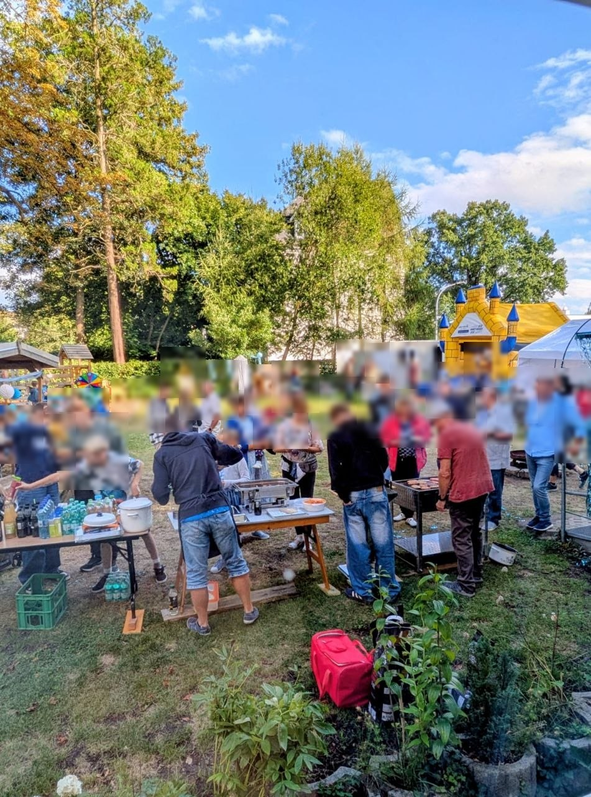

Landeskirchliche Gemeinschaft
Limbach-Oberfrohna
Eine Gemeinschaft von Christen in Limbach-Oberfrohna – wir laden dich herzlich ein, uns kennenzulernen.
Aktuelles & ImpulsAus der Gemeinde
Wir treffen unsTermine
im Gemeinschaftshaus Pleißaer Str. 13c, 09212 Limbach-Oberfrohna
- Gemeinschaftsstunde1. So. im Monat 15 Uhr, sonst 17 Uhr
- Bibelstundejeden Mittwoch 19:30 Uhr
- Jugendstundejeden Donnerstag 19 Uhr
- Partner- & Singlekreis1. Fr. im Monat 19:30 Uhr
- Kinderkreisjeden Samstag 10–11:15 Uhr